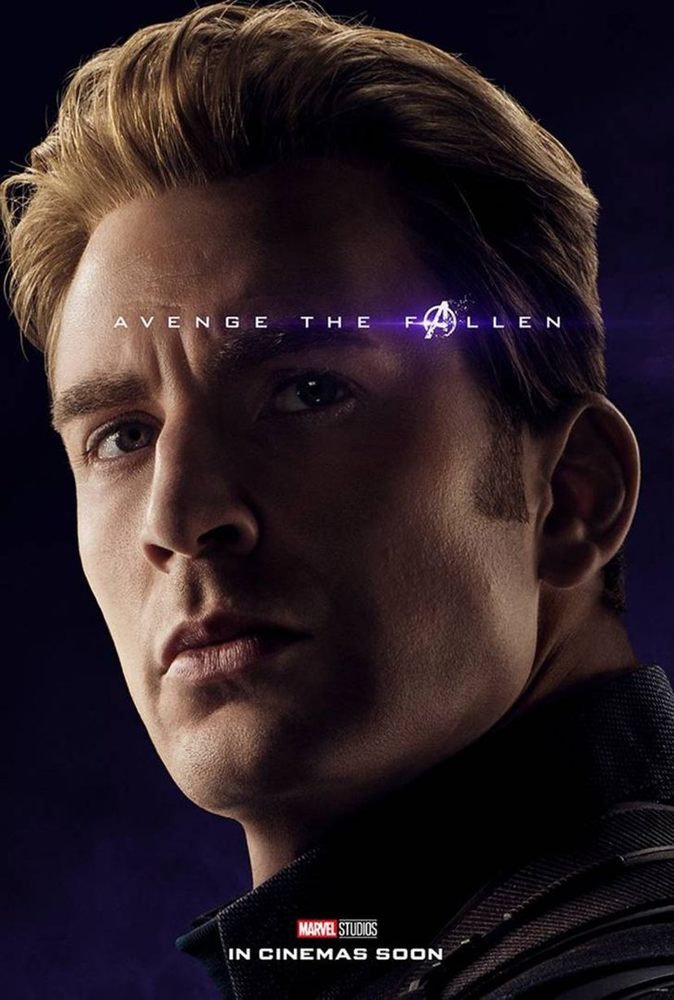

 Um veterano da Segunda Guerra Mundial que foi aprimorado fisicamente através de um soro experimental e congelado antes de acordar no mundo moderno. Evans foi escolhido como parte de um acordo para estrelar três filmes da Marvel, além de Os Vingadores. Evans disse que Steve Rogers é muito mais sombrio em Os Vingadores: "É sobre ele tentando chegar a um acordo com o mundo moderno. Você tem que imaginar, é um choque suficiente aceitar o fato de que você está em um tempo completamente diferente, mas todos que você conhece estão mortos. Todos com quem você se preocupava... Ele era um soldado, obviamente, todos que foram para a batalha com ele, todos os seus companheiros, estão todos mortos. Ele só está solitário. Eu acho que no começo é uma cena de peixe fora d'água, e é difícil. É uma pílula difícil para ele engolir. Em seguida, ele tenta encontrar um equilíbrio com o mundo moderno." Em relação à dinâmica entre Rogers e Tony Stark, Evans disse: "Eu acho que há certamente um atrito entre mim e Tony Stark, eles são pólos opostos. Um cara é flash de holofotes e suave, e o outro cara é altruísta e nas sombras e meio quieto e eles têm que conviver. Eles exploram isso, e é muito divertido".